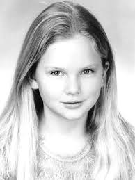

Carrera Musical
A los 5 años empezó a escribir canciones sencillas y a cantar en concursos de karaoke, y ferias en su ciudad natal. Durante el verano escribió una novela de 350 páginas la cual no fue publicada.

Taylor comenzó a visitar Nashville, donde a los doce años empezó a escribir canciones con algunos compositores de la zona, una actividad que se consolidó cuando su familia se instaló en las afueras de la ciudad. Actuó en un concurso en The Bluebird Café que llamó la atención de Scott Borchetta, el cual le ofreció un contrato discográfico con Big Machine Records. Entre sus influencias musicales se encuentran LeAnn Rimes y su abuela, no obstante esta fuese una cantante de ópera profesional, el estilo de Taylor siempre ha sido el de la música country.
Taylor Swift es el primer álbum de estudio homónimo de la cantante y compositora country Taylor Swift. El álbum fue lanzado el 24 de octubre de 2006 bajo el sello Big Machine Records. Swift escribió las canciones para el álbum durante su primer año de preparatoria y ha escrito los créditos en todas las canciones de los álbumes incluyendo las canciones co-escritas con Liz Rose. Swift experimentó grabar el álbum con muchos productores, en última instancia, eligió al productor que produjo su demo, Nathan Chapman. Musicalmente, el álbum tiene estilo música country y pop, y líricamente, habla sobre las relaciones románticas, un par que Swift escribió observando relaciones antes de estar en una. “Estaba saliendo con un chico y a punto de mudarme. Sabía que íbamos a romper, así que empecé a pensar en las cosas que sabía que me lo recordarían. Misteriosamente, lo primero que se me pasó por la cabeza fue mi cantante favorito de country "Tim McGraw” El sencillo llegó al número dos el 27 de junio de 2007. Su video estableció un récord al figurar durante treinta semanas consecutivas en "GAC's fan-voted weekly Top 20 music". El 15 de mayo de 2007, cantó “Tim McGraw” en los premios de la ACM (Academy of Country Music) ante el cantante, en cuyo honor había intitulado su primer sencillo. Su segundo sencillo, “Teardrops on My Guitar”, fue lanzado el 24 de febrero de 2007. Alcanzó su máxima posición en el verano de 2007, llegando al segundo puesto de las listas de country y al treinta y tres en el Billboard Hot 100. En octubre de 2007, consiguió el premio de la Asociación de Compositores de Nashville al mejor cantante y compositor, siendo hasta la fecha, la artista más joven en recibirlo. El 7 de noviembre de 2007, lanzó a la venta el tercer sencillo Our Song, el cual llegó al puesto número uno en la semana del 22 de diciembre de 2007, donde subió desde la sexta casilla. Our Song estuvo seis semanas en el primer lugar de las listas de country, llegando incluso al puesto dieciséis del Billboard Hot 100. Taylor también grabó un EP navideño llamado "Sounds of the Season", que salió a la venta el 16 de octubre de 2007, el cual estuvo disponible exclusivamente en Target Corporation y tuvo el éxito de su álbum debut. Estuvo nominada en 2008 a un Grammy en la categoría de Mejor cantante revelación, pero el premio lo obtuvo Amy Winehouse. Su cuarto sencillo, "Picture to Burn", fue lanzado a principios de 2008 y ocupó el tercer lugar en el Billboard Country Chart en la primavera del mismo año. Big Machine Records anunció el 19 de marzo la salida al mercado de Should've Said No, el quinto y último sencillo del disco Taylor Swift. Hasta la fecha, ha sido ganadora de 7 grammys. En el verano del 2008, salió a la venta "Beautiful Eyes", un EP que se vendió exclusivamente en Wal-Mart. En su primera semana a la venta, vendió 45000 copias, debutando como el #1 en Billboard's Top Country Albums chart y como el #9 en Billboard 200. El segundo álbum de estudio, "Fearless", salió a la venta en los Estados Unidos el 11 de noviembre de 2008. Todas las canciones del álbum vuelven a estar escritas o co-escritas por Taylor. Hasta el momento el álbum ha sido uno de los más vendidos en los Estados Unidos con 6173000 copias vendidas entre noviembre del 2008 y mayo del 2010 y supera los 10000000 en el mundo. Además de que se presentó en Madison Square Garden con este disco también. El álbum debutó en el número uno de Billboard 200, vendiendo 700000 copias en su primera semana siendo el álbum de música country con más ventas, y el cuarto más vendido en el 2008. Su primer sencillo Love Story se convirtió rápidamente en un éxito en las carteleras de pop y country. Durante la primera semana se vendieron por Internet más de 1029000 copias de Fearless, convirtiéndose en el álbum de música más vendido por vía digital durante su primera semana a la venta. Siendo el segundo álbum con más copias vendidas digitalmente en su primera semana desde que Nielsen SoundScan empezó en 2004. Después de ocho semanas, Fearless había vendido más de 4768467 copias a través de Internet. Superando a su álbum debut que había vendido 236046 hasta el 18 de abril de 2009. En su primera semana siete canciones de Fearless entraron a Billboard Hot 100, empatando a Hannah Montana como la artista femenina con más canciones en Billboard Hot 100 en una semana. El sencillo "White Horse" se ubicó en la decimotercera posición, siendo el sexto sencillo de Swift en alcanzar el top 20 de Billboard Hot 100 en su debut, de las trece canciones de Fearless, un total de once llegaron al Billboard Hot 100. El sencillo "Change" fue seleccionado como parte del soundtrack para apoyar a la delegación estadounidense en las Olimpiadas de Beijing 2008. El 12 de septiembre debutó "Love Story" el sencillo más exitoso del álbum. El video de la canción está basado en Romeo & Julieta. La canción fue la segunda más descargada en iTunes Store Top Downloaded Songs y la cuarta en el Billboard Hot 100. Quince semanas después de haber sido incluido en las emisoras de música pop, Love Story se convirtió en la primera canción de música country en alcanzar el número uno en the Nielsen BDS CHR/Top 40 chart en los dieciséis años de historia de la lista, también alcanzó el número uno en Mediabase Top 40 Chart. El segundo sencillo de Fearless, White Horse, debutó el 8 de diciembre de 2008. El video se estrenó en CMT el 7 de febrero de 2009. Aunque no alcanzó el primer lugar en el Billboard's Hot Country Songs si lo logró en el USA Today/Country Aircheck chart en abril de 2009.
"Forever and Always", otra canción de Fearless está basada en la relación de Swift y Joe Jonas. Swift quedó ubicada en el número siete en Nielsen SoundScan Canada's top-10 selling artists en 2008. El mismo año, sus álbumes Taylor Swift y Fearless ocuparon las primeras posiciones del Year-End Canadian Country Albums Chart. de 2009 realizó su primera aparición en Saturday Night Live, siendo la cantante de música country más joven en aparecer en los treinta y tres años de historia del programa. En su aparición el programa tuvo la audiencia más alta en dos meses. En la edición cuarenta y cuatro de Academy of Country Music Awards, Swift recibió el premio del "Álbum del año" por Fearless convirtiéndose en la artista más joven en recibirlo. Swift también ganó el Crystal Milestone Award, por sus logros destacados en la música country. La academia elogió sus logros incluyendo el haber vendido más álbumes en 2008 que cualquier otro artista de cualquier género musical, el enorme éxito de su álbum debut (el cual tuvo cinco sencillos en el Top 10, más que cualquier otra artista en su premiere), y por el éxito mundial de su sencillo “Love Story”. La Academia también la elogió por acercar la música country a los jóvenes. En junio de 2009 en los CMT Music Awards ganó los premios de mejor video femenino del año y del video del año, por su sencillo “Love Story”. Es el álbum country más premiado de la historia. En enero de 2009 Swift anunció su primera gira, durante la cual visitó cincuenta y dos ciudades en treinta y ocho provincias y Estados, en Estados Unidos y Canadá en un lapso de seis meses. Los actos de apertura incluyeron a Kellie Pickler y a Gloriana, un nuevo grupo de música country. El espectáculo estuvo dividido en tres actos que incluyeron una presentación teatral de gráficos, conjuntos y elementos visuales diseñados por la cantante, quien tocó la guitarra y el piano. Múltiples cambios de vestuario y un castillo de cuento de hadas fueron así mismo, elementos del programa. La gira empezó el 23 de abril en Evansville, Indiana. El 6 de febrero de 2009, las entradas para la presentación gratuita del 22 de mayo en el Staples Center de Los Ángeles se vendieron en sólo dos minutos. También se vendieron rápidamente las boletas para otros espectáculos, incluyendo la presentación en el Madison Square Garden. MTV Video Music Awards 2009 En los premios que otorga la cadena MTV recibió el premio como Mejor Video Femenino gracias a su single "You Belong With Me", disputado entre Beyoncé, Katy Perrye, Amy Winehouse y Pink. Pero mientras se encontraba en el escenario dando un pequeño discurso, fue interrumpida por el cantante Kanye West quien mostró su rechazo y alegó que el premio se lo merecía Beyoncé. Minutos más tarde Beyoncé ganó el premio como Mejor Video del Año, y al momento de recibir el premio llamó a Taylor Swift, la abrazó cordialmente y le dejó sus minutos para que pudiese dar sus agradecimientos, interpretando la canción Innocent y luego Mean que se la dedicó a Kanye West. Premios Grammy 2010 En el año 2010, Taylor Swift fue nominada a 8 Premios Grammy, siendo la segunda artista con más nominaciones, sólo por detrás de las 10 de Beyoncé. De ellos ganó la mitad, en las categorías: Mejor interpretación femenina de Country "White Horse", Mejor canción Country White Horse, Mejor Álbum Country Fearless, y finalmente, el premio considerado el más importante: Mejor Álbum del año Fearless, siendo la cantante más joven en conseguirlo nunca, teniendo 20 años al momento de la premiación. A principios de 2010, Taylor hizo su debut cinematográfico en la película Valentine's Day con un papel secundario. Para el soundtrack oficial de la película, Taylor colaboró con un nuevo tema, "Today Was a Fairytale", que vendió en su primera semana 1.000.000 copias, siendo la canción de una solista femenina con más ventas en su primera semana y la quinta de toda la historia de la música. Poco después, Taylor colaboró con John Mayer en el tercer sencillo de su álbum "Battle Studies": "Half of My Heart". El 20 de julio de 2010, Taylor Swift anunció en un encuentro digital con sus fans que su tercer álbum, titulado "Speak Now", sería lanzado el 25 de octubre de ese mismo año. El álbum, en el que Taylor estuvo 2 años trabajando, consta de 14 canciones escritas por ella misma. El primer sencillo del nuevo disco fue “Mine” y aunque inicialmente estaba previsto que saliera a la venta el 16 de agosto de 2010, la canción se filtró en Internet, por lo que la productora decidió lanzarlo inmediatamente, saliendo finalmente el 4 de agosto. El 7 de septiembre de 2010 se confirmaron las primeras fechas de la gira, que daría comienzo en febrero de 2011 en Osaka, Japón. La gira constó de un total de 111 conciertos en 18 países de todo el mundo, y se duró hasta el 2012. En España, actuó el 19 de marzo de 2011, en el Palacio de Deportes de la Comunidad de Madrid, siendo su primera visita a España. El día 12 de septiembre de 2010, se celebraron los MTV Video Music Awards 2010, rodeados de polémica alrededor de Taylor, ya que se cumplía un año de su famoso conflicto con Kanye West en la anterior edición de 2009. Taylor estaba nominada en la categoría: "Mejor video femenino del Año". Taylor no resultó vencedora, pero sin embargo estuvo en la gala. Kanye West anunció días antes que en los premios cantaría una canción dedicada a Taylor, pidiéndole disculpas por lo ocurrido; y así fue. Taylor Swift como respuesta, dio una actuación sorpresa con una canción aparentemente también dedicada a él, en la que acepta sus disculpas, canción que está incluida en su tercer disco,Speak Now; la canción fue: “Innocent”. El álbum ha recibido buenas críticas, además vendió 1044447 millones de copias en su primera semana, siendo la artista número 13 en lograr vender un millón de copias de un álbum, la semana de su lanzamiento.

También ha sido considerado el álbum más vendido en su primera semana en toda la historia de la música country, de una artista femenina, superando a Up! de Shania Twain. Anteriormente, Taylor reveló mediante Twitter, que ya se encontraba grabando música nueva para su último álbum; mencionó que el nombre no estaba listo, pero que ya tenía varias canciones grabadas. El álbum salió a la venta el 22 de octubre de 2012. Taylor había mencionado que quería hacer algo distinto con este álbum, dar un giro. El nombre de este nuevo álbum es Red. De este disco, se desprendió el primer sencillo “We Are Never Ever Getting Back Together” lanzado el 13 de agosto de 2012, después del chat en vivo, donde reveló el nombre del álbum y su nuevo sencillo, además de algunos detalles del vídeo musical. Finalmente, tras años de carrera y canciones importantes, logró con este sencillo su primer número uno en la Billboard Hot 100. El 7 de septiembre del año 2012, lanzó en la gala de "Stand Up to Cancer", su sencillo "Ronan" dedicada a un niño que murió de cáncer a los 4 años, inspirada en una carta de la madre del pequeño niño. A las cuatro semanas antes de que saliera el álbum, elaboró una cuenta regresiva con 4 canciones, sacando pre estrenos de ellas en "Good Morning America" el lunes, y sacando la canción oficialmente el martes. La primera fue "Begin Again", seguida por "Red", canción que da título al álbum, "I Knew You Were Trouble" y "State Of Grace", esta última lanzada una semana antes de la salida del CD al mercado.